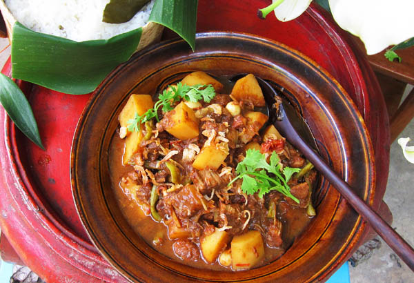

Famous Northern Thai Dishes
Northern Thai cuisine, also known as Lanna cuisine, originates from the mountainous northern region of Thailand. The geography and climate of the area also plays a big part in the style of local food.
With a generally cooler climate compared to other regions in Thailand. Most methods are influenced by neighboring countries like Myanmar, Laos, and southern China.

Khao Soi

Sai Oua

Kaeng Hang Lay

Kanom Jeen Nam Ngiaw
Namprik Noom
A noodle soup that uses wheat-based egg noodles and is served in
a coconut milk curry broth, typically made with chicken or beef,
and the bowl is topped with crispy deep fried noodles.
A flavorful, grilled sausage characterized
by its aromatic blend of spices and herbs.
A tender, braised pork belly, a unique blend of
spices, and a tangy note from tamarind juice.
A noodle soup, featuring fresh rice vermicelli
noodles in a rich, spicy, and slightly sour broth.
A green chili dip with a blend of roasted green
chilies, garlic, and shallots paired with fresh
vegetables, sticky rice, and pork cracklings.